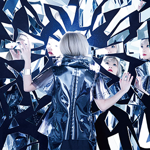
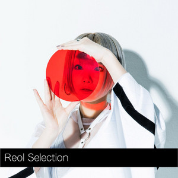

Recently Played

Kyokohsyu
Reol
第六感
Reol
Jijitsujo Special Edition
Reol
Edge
Reol
Sigma
Reol
BLACK BOX
Reol
Creati per Daniele
più ascolti più accurati saranno i suggerimenti

Reol Mix

Reol Selection
Artisti Più Popolari
più ascolti più accurati saranno i suggerimenti